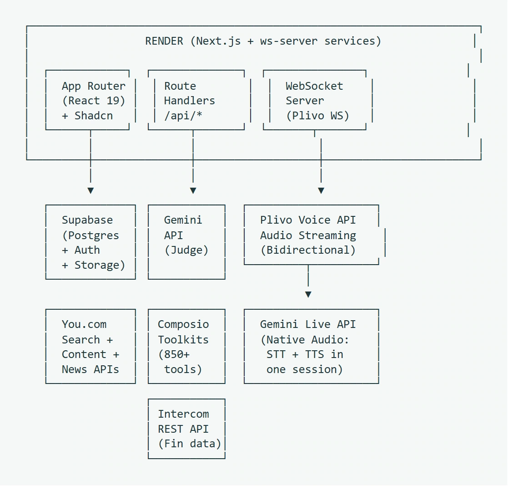

Litmus
A test bench for voice agents that brings call evaluations and integration checks into one review.

The question
When an agent says it has finished a task, how would a reviewer check? A transcript captures the conversation. Checking the integrations separately tells a reviewer which tools are available. Litmus brings those two signals into one evaluation.


My contribution
I started the project submission and contributed the initial public repository. Aritra Saharay, Yuvraj Gupta, Kush Ise and I built the evaluation marketplace, including a web interface for running benchmark tasks and comparing agents.
Two services, two clocks
The Next.js application handles tasks, accounts and results in Supabase. A separate Fastify WebSocket service bridges a Plivo call to Gemini Live. Keeping the audio stream in its own process lets it stay connected while the web app serves requests.
Reading a result
A reviewer can compare the outcome of a benchmark with Composio tool verification. A completed call, a plausible answer and a verified integration each answer a different question. That distinction matters when a voice agent sounds confident.
Limits of the prototype
The public implementation documents the evaluation paths and integrations. A comparison still depends on the chosen task, the available tools and whether their actions can be independently checked.